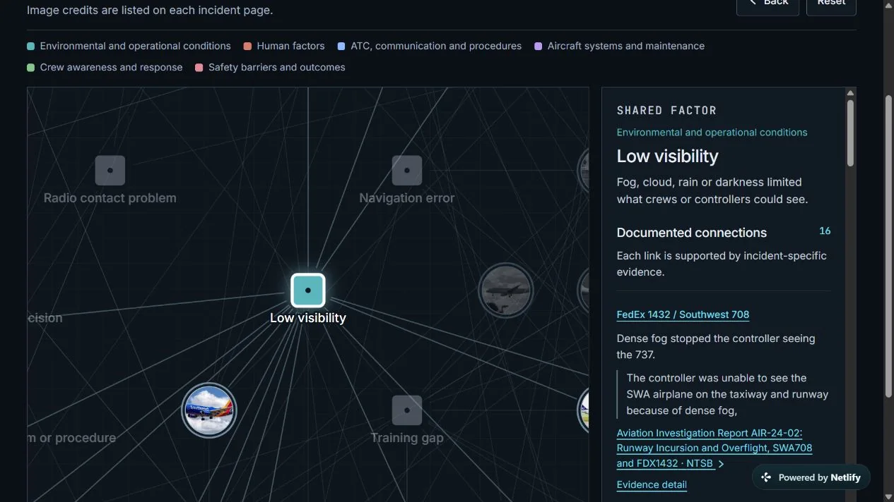
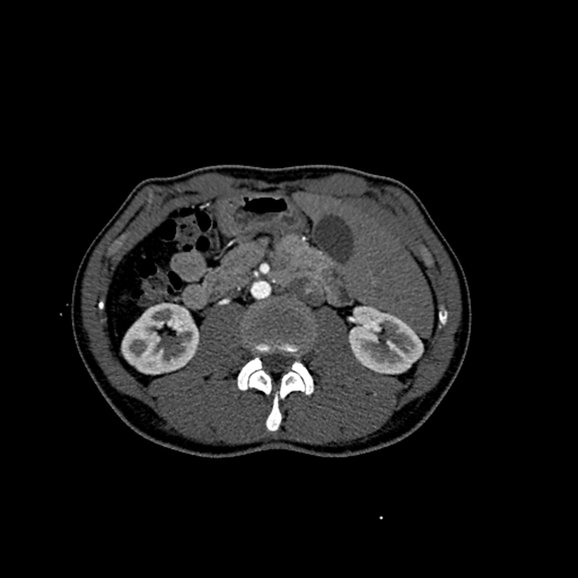
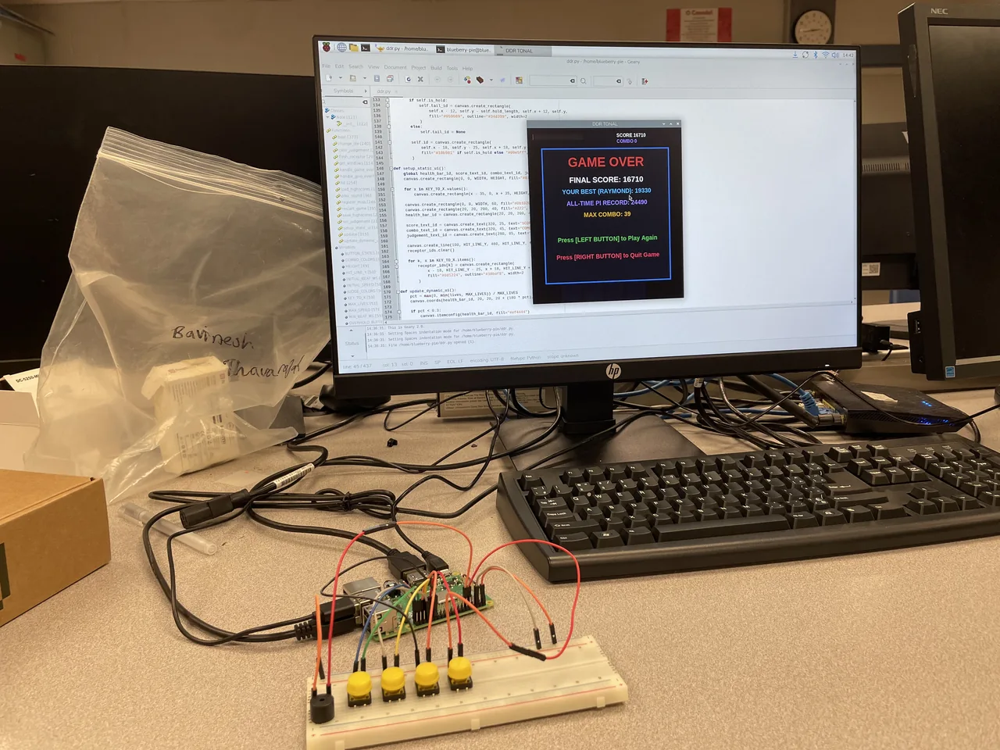

View Aerochronix website
Aerochronix
Search and filter aviation investigations, replay flight paths, and discover related incidents through their shared contributing factors.
250 incidents · 40 animated 2.5D reconstructions
- Tech Stack
- React, TypeScript, D3.js, Three.js
- Implementation
- An interactive D3 knowledge graph lays out incident and factor nodes progressively. Selecting a connection reveals the evidence behind it; the Three.js replay draws on recorded flight data.
 View Candybal on GitHub
View Candybal on GitHub
Candybal
A two-player cupcake brawl that uses iPhone tilt as the controller. A WebSocket relay sends motion input to Unreal Engine through a Cloudflare Tunnel.
Best Use of Meshy · Four-person team, three-hour game jam
- Tech Stack
- Unreal Engine 5, C++, Node.js, WebSocket, Cloudflare Tunnel
- Implementation
- I designed the periodic sunlight mechanic. Melting both players’ frosting adds a deadline that changes when players attack or retreat.
 View Casentra website
View Casentra website
Casentra
Corporate Collapse Simulator
Make decisions during historical corporate crises, from Enron and WorldCom to Silicon Valley Bank and FTX, and compare the outcome with the historical record.
18 playable historical simulations · Enron Interview Mode
- Tech Stack
- React, TypeScript, Vite, Netlify Functions
- Implementation
- A deterministic engine replays decisions against scenario rules. Enron Interview Mode applies structured scoring to calculations and offers feedback on the reasoning.

View Branchseed Navigator on GitHub
Branchseed Navigator
Aorta Segmentation
Our four-person team built a CPU-only pipeline in 24 hours to find the daughter vessels branching from a supplied abdominal aorta mask in CTA scans.
First place, healthcare track · Battle of the Schools
- Tech Stack
- Python, NumPy, SciPy, SimpleITK, Node.js
- Implementation
- The pipeline restricts its search to a narrow physical shell around the aorta, then traces the first 5–10 mm of each candidate branch. It preserves the scan’s physical coordinates and runs under a four-core CPU and 8 GB RAM limit.
Input CTA slice from the subject001 NIfTI test case.
 View Coin Counter on GitHub
View Coin Counter on GitHub
Computer Vision Coin Counter
A Raspberry Pi counter that identifies five Canadian coin denominations, annotates the detections, and calculates their total value.
- Tech Stack
- Python, OpenCV, NumPy, Raspberry Pi 3
- Implementation
- I used Gaussian blur and Hough circles to localize coins, then grouped detections across 19 frames. Calibrated radii and inner-versus-outer colour distinguish the similarly sized loonie and toonie.

View Piano Tiles on GitHub
Piano Tiles Hardware Game
I built a timing game with a partner. A Tkinter interface responds to four physical buttons wired through a breadboard to a Raspberry Pi.
- Tech Stack
- Python, Tkinter, gpiozero, Raspberry Pi
- Implementation
- I wired the controls and piezo buzzer. Debounced GPIO inputs drive the game loop, and the buzzer plays distinct feedback for hits and misses.